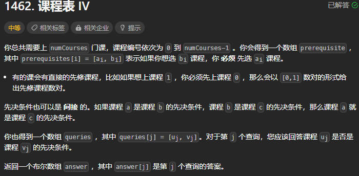

Leetcode 每日一题
2023.09.12

最初解法：纯建图后DFS
vector<bool> checkIfPrerequisite(int numCourses, vector<vector<int>>& prerequisites, vector<vector<int>>& queries) { vector<vector<int>> graph(numCourses); for(int i = 0; i < prerequisites.size(); i++){ int u = prerequisites[i][0]; int v = prerequisites[i][1]; graph[u].emplace_back(v); } vector<bool> ans; for(int i = 0; i < queries.size(); i++){ int u = queries[i][0]; int v = queries[i][1]; vector<bool> visited(numCourses, false); dfs(graph, u, v, ans, visited, false); if(ans.size() < i+1) {ans.emplace_back(false);} } return ans; } void dfs(vector<vector<int>>& graph, int u, int v, vector<bool>& ans, vector<bool>& visited, bool flag){ if(u == v) { ans.emplace_back(true); flag = true; return; } if(graph[u].size() == 0) {return;} for(int j = 0; j<graph[u].size(); j++){ if(flag) {break;} int point = graph[u][j]; if(visited[point] != true){ visited[point] = true; dfs(graph, point, v, ans, visited, flag); } } }
更好解法：拓扑排序+BFS/DFS
-
拓扑排序：1.有向无环图； 2.序列里的每一个点只能出现一次； 3.任何一对 u 和 v ，u 总在 v 之前（这里的两个字母分别表示的是一条线段的两个端点，u 表示起点，v 表示终点）
-
DFS+拓扑排序

vector<bool> checkIfPrerequisite(int numCourses, vector<vector<int>>& prerequisites, vector<vector<int>>& queries) { vector<vector<int>> graph(numCourses); vector<vector<bool>> judge(numCourses, vector<bool>(numCourses, false)); for(int i = 0; i < prerequisites.size(); i++){ int u = prerequisites[i][0]; int v = prerequisites[i][1]; graph[u].emplace_back(v); } vector<bool> visited(numCourses, false); for(int i = 0; i < numCourses; i++){ dfs(i, graph, judge, visited); } vector<bool> ans; for(int i = 0; i < queries.size(); i++){ ans.emplace_back(judge[queries[i][0]][queries[i][1]]); } return ans; } void dfs(int cur, vector<vector<int>>& graph, vector<vector<bool>>& judge, vector<bool>& visited){ if(visited[cur]) {return;} visited[cur] = true; for(int j = 0; j<graph[cur].size(); j++){ //遍历cur的子树 int next = graph[cur][j]; dfs(next, graph, judge, visited); judge[cur][next] = true; for(int nnext = 0; nnext < judge[cur].size(); nnext++){//遍历cur的子树的子树 judge[cur][nnext] = judge[cur][nnext] | judge[next][nnext]; } } }
- BFS+拓扑排序

vector<bool> checkIfPrerequisite(int numCourses, vector<vector<int>>& prerequisites, vector<vector<int>>& queries) { vector<vector<int>> graph(numCourses); vector<int> degree(numCourses, 0); vector<vector<bool>> judge(numCourses, vector<bool>(numCourses, false)); for(int i = 0; i < prerequisites.size(); i++){ int u = prerequisites[i][0]; int v = prerequisites[i][1]; graph[u].emplace_back(v); degree[v]++; } queue<int> que; for(int i = 0; i < numCourses; i++){ if(degree[i] == 0){ que.push(i); //入度为0的入队列 } } while(!que.empty()){ int cur = que.front(); que.pop(); for(int j = 0; j<graph[cur].size(); j++){ //遍历cur的子树 int next = graph[cur][j]; judge[cur][next] = true; for(int pre = 0; pre < judge[cur].size(); pre++){ //遍历cur的父节点 judge[pre][next] = judge[pre][next] | judge[pre][cur]; } degree[next]--; if(degree[next] == 0){ que.push(next); } } } vector<bool> ans; for(int i = 0; i < queries.size(); i++){ ans.emplace_back(judge[queries[i][0]][queries[i][1]]); } return ans; }
- 注意：由于DFS是从最深回溯到最浅的结点的，所以遍历的是cur的子树的子树，而BFS是从浅入深地，所以遍历的是cur的父节点
2023.09.13

方法一：深度优先搜索
bool checkValidGrid(vector<vector<int>>& grid) { if(grid[0][0] != 0) {return false;} int g_size = grid.size(); vector<vector<bool>> visited(g_size, vector<bool>(g_size, false)); vector<vector<int>> direction = {{1, -2}, {2, -1}, {2, 1}, {1, 2}, {-1, 2}, {-2, 1}, {-2, -1}, {-1, -2}}; bool ans = false; dfs(0, 0, 0, visited, direction, g_size, ans, grid); return ans; } void dfs(int x, int y, int index, vector<vector<bool>>& visited, vector<vector<int>>& direction, int g_size, bool& ans, vector<vector<int>>& grid){ if(index == g_size*g_size-1) {ans = true; return;} if(visited[x][y]) {return;} visited[x][y] = true; for(int i = 0; i < 8; i++){ int new_x = x + direction[i][0]; int new_y = y + direction[i][1]; if(new_x < g_size && new_x >= 0 && new_y < g_size && new_y >= 0 && grid[new_x][new_y] == index+1){ dfs(new_x, new_y, index+1, visited, direction, g_size, ans, grid); } } }
方法二：广度优先搜索
bool checkValidGrid(vector<vector<int>>& grid) { if(grid[0][0] != 0) {return false;} int g_size = grid.size(); vector<vector<int>> direction = {{1, -2}, {2, -1}, {2, 1}, {1, 2}, {-1, 2}, {-2, 1}, {-2, -1}, {-1, -2}}; //BFS int x = 0, y = 0; for(int index = 0; index < g_size*g_size; index++){ if(index == g_size*g_size-1) {break;} bool flag = false;//若八个方向有一个是正确的index，则置为true for(int k = 0; k < 8; k++){ int new_x = x + direction[k][0]; int new_y = y + direction[k][1]; if(new_x < g_size && new_x >= 0 && new_y < g_size && new_y >= 0 && grid[new_x][new_y] == index+1){ flag = true; x = new_x; y = new_y; break; } } if(!flag) {return false;} } return true; }
2023.09.14

方法一：模拟和迭代的思想，可认为是DFS
vector<vector<int>> queensAttacktheKing(vector<vector<int>>& queens, vector<int>& king) { vector<vector<int>> direction = {{1,0}, {-1,0}, {0,1}, {0,-1}, {1,1}, {1,-1}, {-1,1}, {-1,-1}}; vector<vector<bool>> visited(8, vector<bool>(8, false)); vector<vector<int>> ans; for(int cnt = 0; cnt < queens.size(); cnt++){ visited[queens[cnt][0]][queens[cnt][1]] = true; } for(int cnt = 0; cnt < queens.size(); cnt++){ int direction_index = -1; int y_bias = queens[cnt][0] - king[0]; int x_bias = queens[cnt][1] - king[1]; if(y_bias < 0 && x_bias == 0) {direction_index = 0;} else if(y_bias > 0 && x_bias == 0) {direction_index = 1;} else if(y_bias == 0 && x_bias < 0) {direction_index = 2;} else if(y_bias == 0 && x_bias > 0) {direction_index = 3;} else if(abs(y_bias) == abs(x_bias)){ if(y_bias < 0 && x_bias < 0) {direction_index = 4;} else if(y_bias < 0 && x_bias > 0) {direction_index = 5;} else if(y_bias > 0 && x_bias < 0) {direction_index = 6;} else if(y_bias > 0 && x_bias > 0) {direction_index = 7;} } if(direction_index > -1){ bool ansl = dfs(queens[cnt][0]+direction[direction_index][0], queens[cnt][1]+direction[direction_index][1], king[0], king[1], direction, direction_index, visited); vector<int> tmp = {queens[cnt][0], queens[cnt][1]}; if(ansl) {ans.emplace_back(tmp);} } else{ continue; } } return ans; } bool dfs(int x, int y, int x_goal, int y_goal, vector<vector<int>>& direction, int direction_index, vector<vector<bool>>& visited){ if(x == x_goal && y == y_goal) {return true;} else if(x >= visited.size() || x < 0 || y >= visited.size() || y < 0) {return false;} else if(visited[x][y]) {return false;} return dfs(x+direction[direction_index][0], y+direction[direction_index][1], x_goal, y_goal, direction, direction_index, visited); }
方法二：官方题解，从国王出发遍历每个女王，在每个方向上一旦找到一个女王即可跳出这个方向上的遍历
vector<vector<int>> queensAttacktheKing(vector<vector<int>>& queens, vector<int>& king) { unordered_set<int> queen_pos; for (const auto& queen: queens) { int x = queen[0], y = queen[1]; queen_pos.insert(x * 8 + y); } vector<vector<int>> ans; for (int dx = -1; dx <= 1; ++dx) { for (int dy = -1; dy <= 1; ++dy) { if (dx == 0 && dy == 0) { continue; } int kx = king[0] + dx, ky = king[1] + dy; while (kx >= 0 && kx < 8 && ky >= 0 && ky < 8) { int pos = kx * 8 + ky; if (queen_pos.count(pos)) { ans.push_back({kx, ky}); break; } kx += dx; ky += dy; } } } return ans; }
2023.09.15

方法一：数组、模拟
int giveGem(vector<int>& gem, vector<vector<int>>& operations) { for(int cnt = 0; cnt < operations.size(); cnt++){ int tmp = gem[operations[cnt][0]]/2; gem[operations[cnt][0]] -= tmp; gem[operations[cnt][1]] += tmp; } sort(gem.begin(), gem.end()); return gem[gem.size()-1] - gem[0]; }
2023.09.18

方法一：动态规划+DFS
之前第一次刷题的时候做过的题目，打家劫舍是一个系列，三个问题都可以看看，都是用动态规划的思想，这三个题目的房子分布分别是线性、环形和二叉树
int rob(TreeNode* root) { vector<int> result = dp_processing(root); return max(result[0], result[1]); } vector<int> dp_processing(TreeNode* cur){ //每一个节点有一个长度为2的dp数组，索引为0的表示不偷这个节点下的最高金额，索引为1的表示偷这个节点下的最高金额 if(cur == nullptr){return {0,0};} //后序遍历 vector<int> dp_left = dp_processing(cur->left); vector<int> dp_right = dp_processing(cur->right); //不偷当前节点 int dp0 = max(dp_left[0], dp_left[1]) + max(dp_right[0], dp_right[1]); //偷当前节点 int dp1 = cur->val + dp_left[0] + dp_right[0]; return {dp0, dp1}; }
2023.09.19（难题）

方法一：动态规划+二分查找
记住： 看到 「最大化的最小值」 或者 「最小化的最大值」 就要想到二分法来解题，这是一个固定的套路， 在本题中，是最大化窃取房屋数目下的最小窃取金额，如果窃取的最大金额为c时，而且，设按题意窃取（窃取不相邻的房屋）能窃取的房屋数目为count，满足c越大count越大，存在单调性，可以使用二分。
返回数组最大/最小值或其索引：max_element()和min_element()函数
int minCapability(vector<int>& nums, int k) { int left = *min_element(nums.begin(), nums.end()); int right = *max_element(nums.begin(), nums.end()); //二分法：lower_bound写法 while(left < right){ int mid = (left + right)/2; if(dp_check(nums, k, mid)) {left = mid + 1;} else {right = mid;} } return left; } //当窃取的最大金额为mid时，返回在nums中窃取不相邻的房屋，能窃取的房屋数dp1是否小于k bool dp_check(vector<int>& nums, int k, int mid){ int dp0 = 0, dp1 = 0;//分别表示dp[i-1]和dp[i]，dp[i]表示在前i个房间窃取金额不超过mid的最大房屋个数 for(auto x:nums){ if(x > mid) {dp0 = dp1;}//当nums[i-1]>mid时，dp[i]=dp[i-1]，故直接更新dp[i-1]即可 else{ int tmp = dp1; //当nums[i-1]<=mid时，有两种选择方法，分别为不选第i个房屋：dp[i]=dp[i-1]，即dp1=dp1 //选第i个房屋，dp[i]=dp[i-2]+1，即dp1=dp0+1 dp1 = max(dp1, dp0+1); dp0 = tmp;//更新一下 } if(dp1 >= k) {return false;}//若窃取的房屋数已经大于k，则可以提前退出 } return dp1 < k; }
二分查找总结
- 找到大于等于目标值的下界的位置：lower_bound
- 找到大于目标值的下界的位置：upper_bound
- 找到小于目标值的上界的位置：lower_bound - 1
- 找到小于等于目标值的上界的位置：upper_bound - 1

lower_bound的三种写法
// 搜索第一个大于等于target的数的索引（左闭右闭写法） int lower_bound1(vector<int>& nums, int target){ //左闭右闭区间 [left, right] int left = 0; int right = nums.size() - 1; while(left <= right){//区间不为空则继续 int mid = (left + right)/2; if(nums[mid] < target) {left = mid + 1;}//[mid+1, right] else {right = mid - 1;}//[left, mid-1] } return left; } // 搜索第一个大于等于target的数的索引（左闭右开写法）【常用】 int lower_bound2(vector<int>& nums, int target){ //左闭右开区间 [left, right) int left = 0; int right = nums.size(); while(left < right){//不为空则继续。由于right是开的，所以left=right时该区间为空， int mid = (left + right)/2; if(nums[mid] < target) {left = mid + 1;}//[mid+1, right) else {right = mid;}//[left, mid) } return left; //输出right也行 } // 搜索第一个大于等于target的数的索引（左开右开写法） int lower_bound3(vector<int>& nums, int target){ //左开右开区间 (left, right) int left = -1; int right = nums.size(); while(left + 1 < right){//不为空则继续。由于left和right是开的，所以left+1>=right时该区间为空 int mid = (left + right)/2; if(nums[mid] < target) {left = mid;}//(mid, right) else {right = mid;}//(left, mid) } return right; }
upper_bound的三种写法（在lower_bound基础上加多了一个等于号判断即可）
// 搜索第一个大于target的数的索引（左闭右闭写法） int upper_bound1(vector<int>& nums, int target){ //左闭右闭区间 [left, right] int left = 0; int right = nums.size() - 1; while(left <= right){//区间不为空则继续 int mid = (left + right)/2; if(nums[mid] <= target) {left = mid + 1;}//[mid+1, right] else {right = mid - 1;}//[left, mid-1] } return left; } // 搜索第一个大于target的数的索引（左闭右开写法）【常用】 int upper_bound2(vector<int>& nums, int target){ //左闭右开区间 [left, right) int left = 0; int right = nums.size(); while(left < right){//不为空则继续。由于right是开的，所以left=right时该区间为空， int mid = (left + right)/2; if(nums[mid] <= target) {left = mid + 1;}//[mid+1, right) else {right = mid;}//[left, mid) } return left; //输出right也行 } // 搜索第一个大于target的数的索引（左开右开写法） int upper_bound3(vector<int>& nums, int target){ //左开右开区间 (left, right) int left = -1; int right = nums.size(); while(left + 1 < right){//不为空则继续。由于left和right是开的，所以left+1>=right时该区间为空 int mid = (left + right)/2; if(nums[mid] <= target) {left = mid;}//(mid, right) else {right = mid;}//(left, mid) } return right; }
视频 https://www.bilibili.com/video/BV1AP41137w7/?vd_source=1dc1f5616fa7bc05e0def8e62f42c924